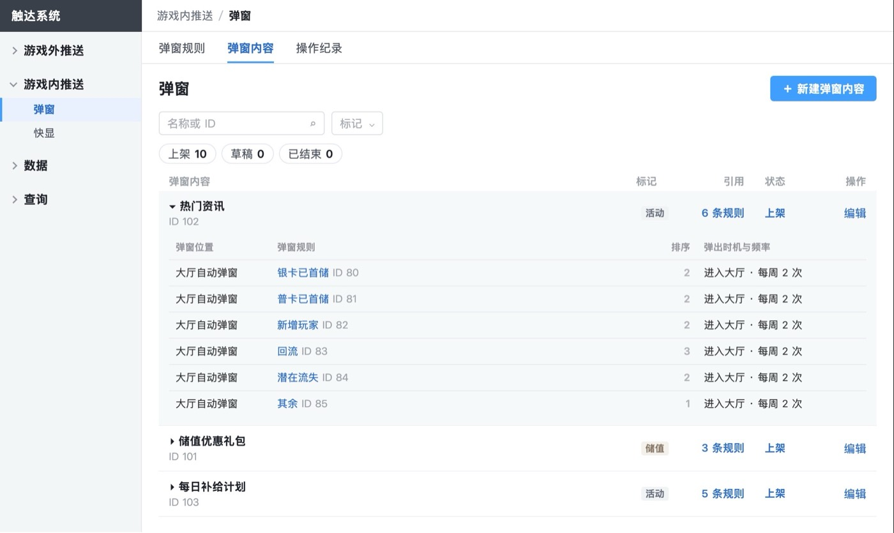
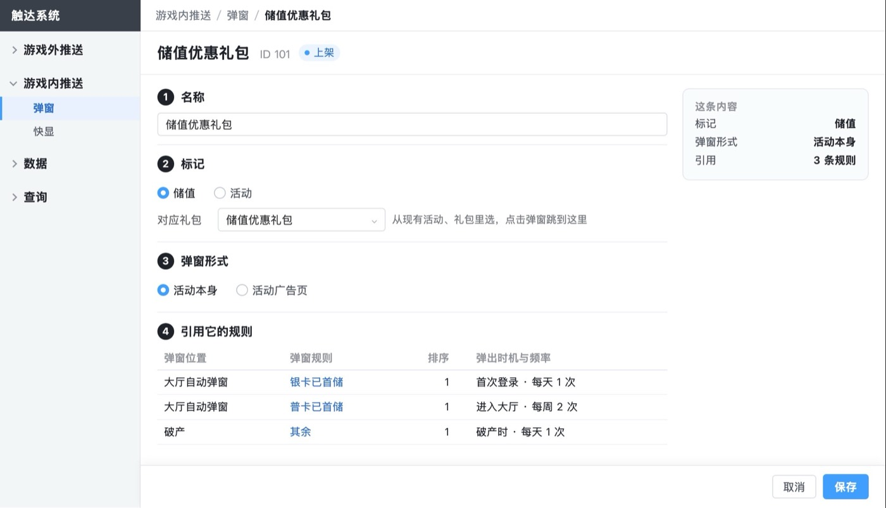

推送系统后台 · 需求评审版 · 对标顶尖产品 · 2026-10-28
对标 9 家顶尖产品：后台结构不用动，推播补了 6 处小的；弹窗 2 件改成业界做法（你 10/28 定），都已改进评审版
先查项目的顶尖做法参考库，查不到或要核实的再上网看官方文档。对照的是 Braze、MoEngage、CleverTap、OneSignal、Airship、Adobe Journey Optimizer、Firebase，以及游戏商城类的 Appcharge、Unity。每条都附出处；关键的几条我又打开官方页面核过。
6处已补
推播：发布确认补类别、内容和测试记录，日历按状态区分等，都是照业界的小改动
2件已改
弹窗：时机、频率挪到弹窗内容上；恢复弹窗、快显的「发给测试账号」
6处我们多做
发布前估拦截、名额占用、按人群上限等，官方文档里都没见到同类，保留
01弹窗 2 件改成业界做法（你 10/28 定，已改）
1 弹出时机、频率、冷却挪到弹窗内容上：查到的各家都设在单条消息上，我们是唯一的混合做法
- 业界怎么做：触发时机、显示几次、间隔多久，都设在那一条消息上，计数也按那一条算。要给不同人群不同频率，就另建一条消息。
- 我们现在：同一个弹窗内容在每条规则里各设一次，次数却跨规则合在一起算，每条规则再按自己的周期判断。查到的各家都没有这种做法。运营 10/26 问「每周和每天同时存在时怎么触发」，根子就在这里。
- 改成：时机、频率、冷却在弹窗内容的编辑页设一次；规则编辑页的弹窗排序只留内容、标记、顺序、移除。同一内容要给不同人群不同频率时，复制成另一个内容，和业界「另建一条消息」一样。弹窗内容加一个「数据」入口，看它跨规则合计的曝光、点击。
- 代价：
- 要改 6 张图：10、10d、11、10e、10c2、19。
- 第 4 页重写两节规则。
- 数据迁移要多一条规则：现网同一内容在各规则设置一致的直接迁；不一致的列清单给运营逐个定，或拆成几个内容（这一条业界没有可参照的，是推断）。
- 推荐改。热门资讯被 6 条规则引用，现在 6 处都填同一个「进入大厅 · 每周 2 次」，改后填一次。

热门资讯在 6 条规则里各填一次同样的频率

改后时机、频率、冷却加在这页，规则里不再填
2 恢复弹窗、快显的「发给测试账号」：业界都有，我们现在的替代办法有三个漏洞
- 业界怎么做：Braze、Firebase、OneSignal、MoEngage、CleverTap、Airship 都能把一条应用内消息直接发到测试账号或测试设备上看效果，不计数据。
- 我们为什么没有：你 10/21 问「这个发送测试需要开发什么功能？得权衡一下有没有必要」，当时按不无故加开发工时，把弹窗、快显的测试预览删了，改用对象为「名单」的规则代替。
- 名单规则代替不了的三处：
- 大厅是轮流时，测试账号要正好轮到这条规则才看得到。
- 优先级最高的位置上，要把测试规则拖到第 1 才看得到，会挡住真实玩家的规则。
- 条件触发的快显对象只能是触发的玩家，选不了名单，上线前没法自测；要迁入的通行证升级提示就是这种。
- 改成：弹窗内容和快显的编辑页加「发给测试账号」，填会员编号，这些账号下次进入对应位置时强制弹一次，不计次数、不计数据。推播、短信现在就是这样做的。
- 推荐改：三处漏洞都会让配错的弹窗直接给真实玩家看到。
02推播：已照业界补的 6 处
| 补了什么 | 业界做法与出处 |
|---|
| 发布确认补消息类别、三种语言的标题、最近一次发送测试 | Braze 审阅页列排期、受众、消息内容，测试也在这一步（creating_campaign）；Airship 审阅页把预览和摘要并排放、可发测试（create） |
| 日历格子按状态区分：已结束变淡、已暂停画斜纹；点格子打开这条推送 | Airship 日历：进行中为实色、已暂停为斜线、已完成为浅色，点开可看消息和报告（我已核实，manage-views） |
| 营销定时选在勿扰时段内时，时间旁提示「勿扰结束时发出」；顺延的按实际发出那一刻的对象发 | Braze 工作区勿扰对固定时间的定时是直接放弃，各家做法不同，选时间时就要让运营知道我们是顺延；Braze 写明顺延不重算分群（quiet_hours） |
| 已结束的原因加「无可接收玩家」 | OneSignal 有 No Recipients 状态（message reports） |
| 单条数据：发出后改过设置的，标「发出后改过 N 次」，点开看操作纪录 | MoEngage、OneSignal 的单条报告显示发送时的设置（push analytics） |
| 「停止发送中的推送」列入待研发确认 | Adobe 写明停止活动不会停下正在进行的发送；Firebase 开始扇出后不能取消（firebase-console） |
03保持：和业界同类，或者比业界做得多
- 权重三档加当天预留：和 Adobe 的「优先级加前瞻」同一思路，被挤掉的原因也单列（我已核实，journey-capping）；其余几家是先到先得。
- 消息类别、按渠道计上限、自然日重置、测试发送、列表状态与操作、单条漏斗：和 MoEngage、Braze、Adobe 同类。
- 我们多做的，官方文档都没见到同类：发布前估算预计上限拦截和对其他推送的影响；名额占用；按人群分别设上限；最优先在条件满足时保证不被拦；按玩家预览下一次会弹什么；玩家查询写出名额被哪几条占了。
- 弹窗三层结构、优先级精确排名、大厅每人每天上限、内容库与引用：都有先例（Braze Banners 先建位置、同一位置按优先级出一条；Braze Content Blocks 能列出被哪些消息引用）。
04和业界不同、评审时可能被问的
- 轮流：查到的应用内消息产品都没有按规则轮流，营销类同一次只出最高一条。这是你定的，保留；评审时要能说清它解决什么：同时符合几类人群的玩家，每次进大厅看到不同的内容。
- 优先级最高的位置，最高那条没东西可弹就不弹：MoEngage 会落到下一条（我已核实，delivery mechanism）。定稿里就是不落到下一条，这样破产位置的实验组不会混进「其余」的内容。保留。
- 勿扰写死：业界多由每条推送自己选放弃或顺延；我们按定时、条件触发和类别写死，少一个选项。保留。